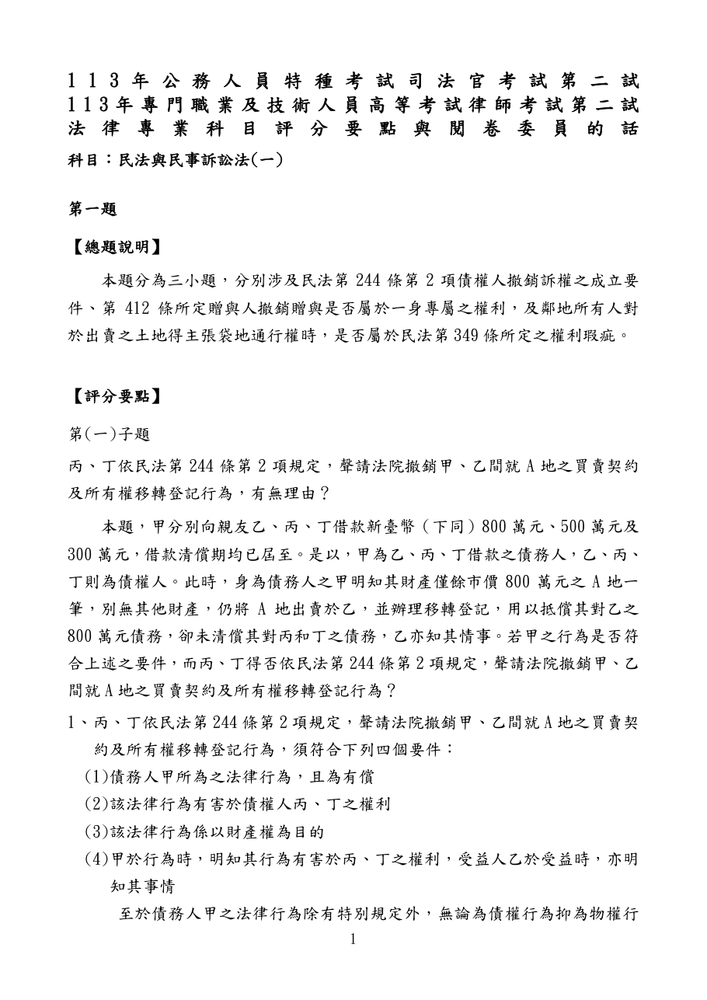
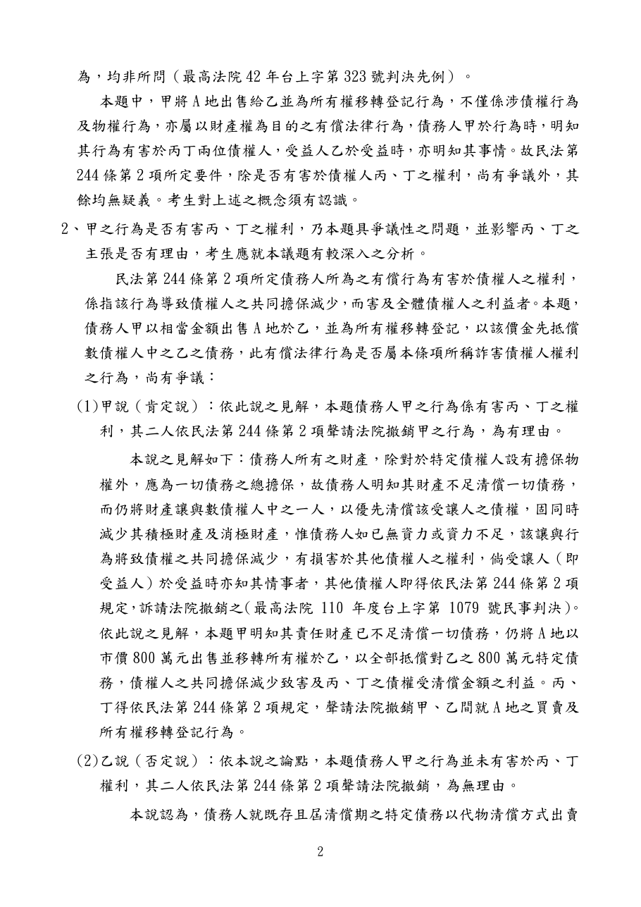
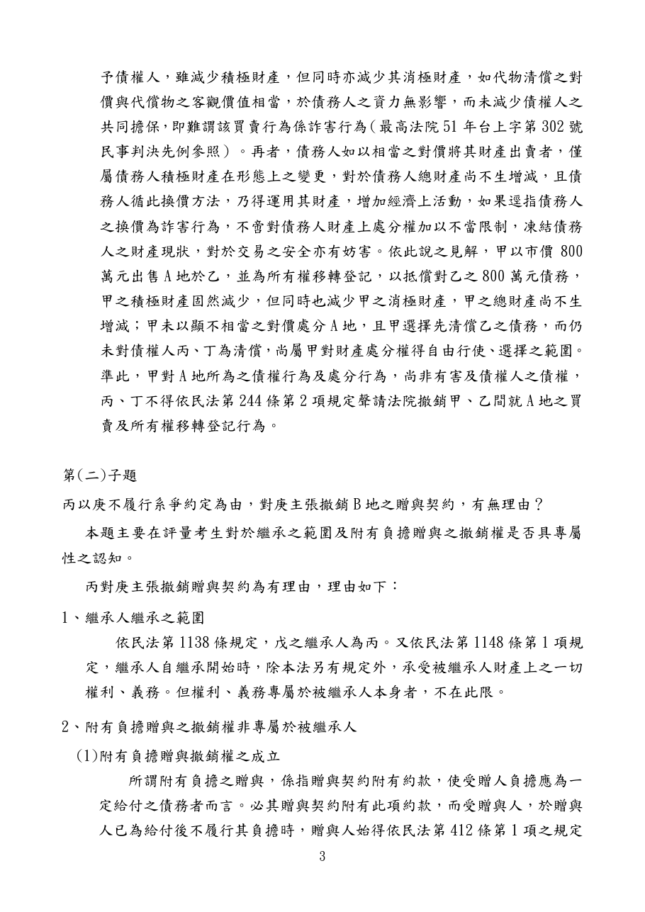
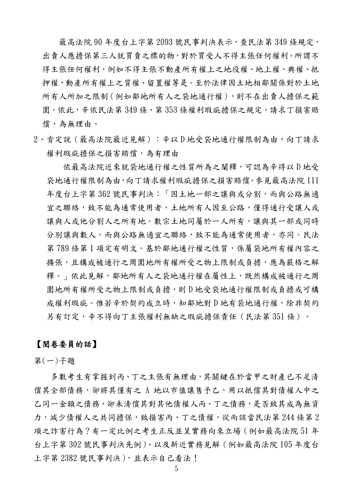
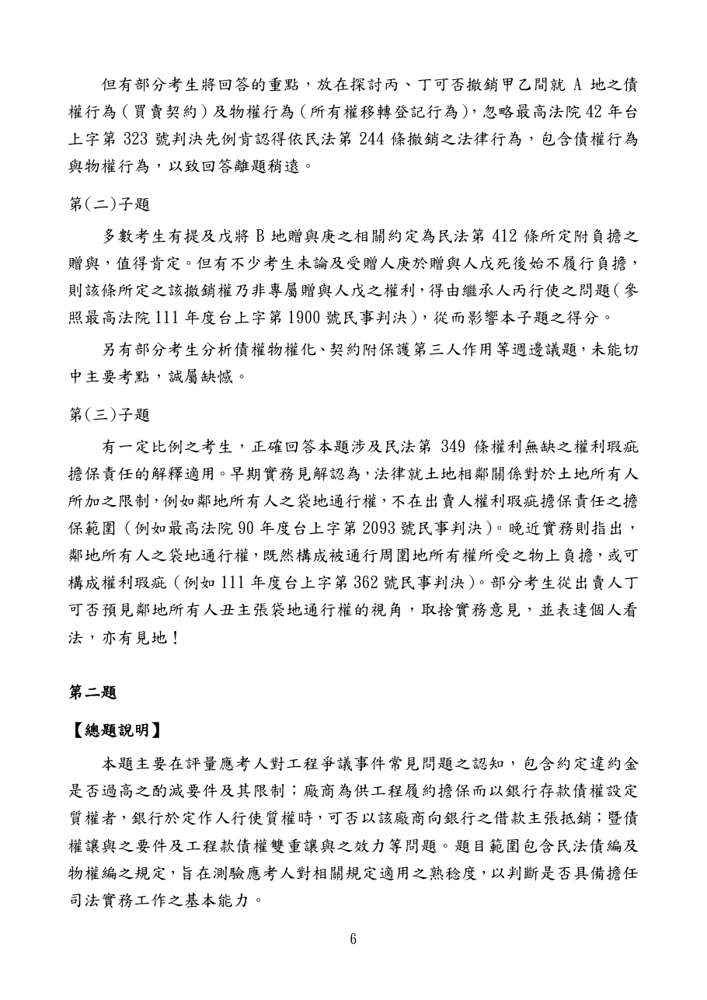

只剩一塊地，全拿去還一個債主？
詐害債權撤銷：先找爭點，再把兩說寫清楚
AI擬答，由Claude與Codex各寫一版後合併；依官方評分要點整理，待教師驗證。
題目：本集只解第（一）小題
原卷第1頁，已以PyMuPDF轉圖核對題幹及第（一）小題。第（二）（三）小題僅保留整題脈絡。
本集影片
答題地圖
主要爭點是其他普通債權的受償是否受害。債權行為、物權行為都可撤銷，用一句處理即可。
字數：120分鐘×25／150＝20分鐘；扣讀題3分鐘，17×33＝561字。本文定稿558字，含標點、數字及標號，排除空白換行，以程式核算。
本題用到的條文
民法第244條｜原文
第1項 債務人所為之無償行為，有害及債權者，債權人得聲請法院撤銷之。
第2項 債務人所為之有償行為，於行為時明知有損害於債權人之權利者，以受益人於受益時亦知其情事者為限，債權人得聲請法院撤銷之。
第3項 債務人之行為非以財產為標的，或僅有害於以給付特定物為標的之債權者，不適用前二項之規定。
第4項 債權人依第一項或第二項之規定聲請法院撤銷時，得並聲請命受益人或轉得人回復原狀。但轉得人於轉得時不知有撤銷原因者，不在此限。
全國法規資料庫現行條文｜2026-11-14核對
白話
拿有對價的交易減損債權人的受償，須債務人行為時明知，受益人受益時也知情，債權人才可請法院撤銷。不是只要欠錢、賣地就一定能撤銷。
生活例子（假設）
某人只剩一輛車，價值不足清償兩名普通債權人，卻把車全部交給其中一人抵債；若雙方都明知會害及另一人的受償，即須檢查第2項要件。這是說明條文的假設，非另引裁判。
民法第245條｜撤銷權期間
前條撤銷權，自債權人知有撤銷原因時起，一年間不行使，或自行為時起，經過十年而消滅。
知有撤銷原因起1年、行為起10年；本題沒有時間資料，不另設期間爭點。
民法第319條｜代物清償
債權人受領他種給付以代原定之給付者，其債之關係消滅。
受領土地替代金錢給付，可以消滅原債；因此有對價，仍須檢查是否害及其他債權。
第4項回復原狀屬延伸；本題主要問買賣與所有權移轉行為可否撤銷。
擬答｜558字
這是AI合併擬答，不是考選部公布的標準答案。重點是兩說與取捨，官方資料並列不同立場。
互動：乙全拿，與比例受償有何差別？
先選一種情況，看丙、丁的受償如何變化。比例列只供理解受償機會，不代表本題已進入法定分配程序。
為什麼這樣寫
- 否定說：資產與債務各減800萬元，淨財產未變；尊重清償選擇及交易安全。
- 本文採肯定說：甲已資力不足，乙無優先地位卻全部受償，丙丁全無可供受償財產。不能只看淨財產。
- 51台上302有「具有優先受償權」前提，與本題普通債權不同；不是把該案整體說成已被廢棄或失效。
實務見解與引用範圍
| 字號 | 法律標準 | 程序與限制 |
|---|---|---|
| 最高法院42台上323 | 四要件；買賣及物權移轉均可作撤銷標的。 | 廢棄發回；舊案歷審端點0筆，但全文明載前審，不能稱無歷審。 |
| 最高法院51台上302 | 相當對價用以清償具有優先受償權之債務，對普通債權人難謂詐害。 | 廢棄發回，要求調查售價及有無清償抵押債務；不得擴大到一切普通債權。 |
| 最高法院105台上2382 | 責任財產不足時，全額清償特定債權若害及其他受償，仍可撤銷。 | 廢棄發回；更審106上更（一）6僅准撤銷尚存工程款債權4,695,188元部分。107台上2263因上訴不合法程序駁回，非最高法院另作實體認定。 |
| 最高法院110台上1079 | 除擔保物權外，財產應為一切債務總擔保；資力不足、雙方明知之偏頗清償得撤銷。 | 廢棄發回；歷審末筆110上更一29標示撤回上訴、無全文連結，不宣稱更審已終局撤銷。 |
2026-11-14已核對官方全文；42、51兩件另逐頁看掃描全文。歷審使用官方頁面的動態端點核對，沒有把靜態空欄解讀成無歷審。42、51原為判例，依司法院法令判解系統編註，現與一般最高法院裁判效力相同。
自我檢查
預想易錯點
以下為教學預想，非學生錯誤統計。
- 只看淨財產未變，忽略丙丁的受償機會。
- 省略51案優先受償前提。
- 把發回判決說成已終局認定撤銷成立。
- 花太多篇幅爭論債權、物權行為能否撤銷。
官方評分資料
以下為官方評分要點與閱卷委員說明原頁，已轉圖逐頁核對；第5頁同時包含其他小題說明，請看本題第（一）小題段落。
官方資料第1頁｜評分要點

官方資料第2頁｜評分要點

官方資料第3頁｜評分要點

官方資料第5頁｜閱卷委員的話

官方資料第6頁｜閱卷委員的話

參考資料與來源區分
- 題目及兩說比較方向：考選部113年司法官、律師第二試民法與民事訴訟法（一）原卷第1頁；官方評分資料第1～3、5～6頁，均看圖核對。
- 條文：全國法規資料庫民法第244、245、319條；裁判：上列四則官方全文及動態歷審。
- 比例示意、互動、白話例子與畫面：教學設計，數字由程式計算。558字擬答：Claude與Codex獨立撰寫後合併，Jackie同意定稿。
相關連結
歡迎指正：mjib007@gmail.com